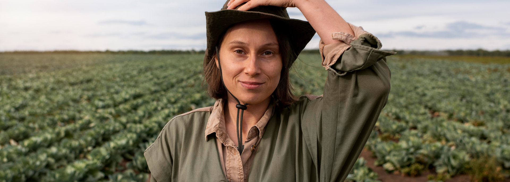

A ONU pontua algumas das práticas que devem ser adotadas pelos países o quanto antes para reduzir os índices de fome e insegurança alimentar, além de contribuir para a acessibilidade de dietas saudáveis. A valorização da agricultura familiar e pequenos produtores é uma delas.
"Para contribuir para a acessibilidade de dietas saudáveis, é necessário criar incentivos para a diversificação da produção de alimentos nutritivos destinados principalmente à agricultura familiar e aos pequenos produtores, tomar medidas para a transparência dos preços desses alimentos nos mercados e no comércio, e ações como transferências de dinheiro e melhoria dos cardápios escolares", disse Mario Lubetkin, diretor assistente da FAO e representante regional para a América Latina e o Caribe.
No entanto, para além do cenário global, como nós podemos fazer para contribuir com as metas da ODS 2? O Conecta Brasil, por exemplo, é uma plataforma de captação de recursos, que conta com mais de 500 Organizações da Sociedade Civil (OSCs) cadastradas.
Muitas delas, que ajudam no combate à fome pelo Brasil afora, abrem campanhas diretamente no site para conseguir doações em dinheiro para a compra de cestas básicas para famílias em situação de vulnerabilidade social. É possível visualizar todas pela página de “Instituições”.
Você também consegue filtrá-las de acordo com as causas que elas apoiam. A maioria das instituições cadastradas no Conecta Brasil possuem o intuito de cumprir com as metas da ODS 2.
“Além de contribuir com as campanhas abertas pelas instituições, você também pode se cadastrar como um voluntário para apoiar as atividades delas”, Isabela Mendes, analista de ações sociais do Conecta Brasil.

Demais ODS do Pacto Global
Além da ODS 02, confira quais são os demais objetivos de desenvolvimento sustentável da ONU:
ODS 01: Erradicação da pobreza, ou seja, eliminá-la em todas as suas formas e em todos os lugares;
ODS 03: Saúde e bem-estar. Assegurar uma vida saudável e promover o bem-estar para todos e em todas as idades;
ODS 04: Educação de qualidade. Assegurar a educação inclusiva e equitativa de qualidade, além de promover oportunidades de aprendizagem ao longo da vida para todos;
ODS 05: Alcançar a igualdade de gênero e empoderar todas as mulheres e meninas;
ODS 06: Assegurar a disponibilidade e a gestão sustentável da água e saneamento para todos;
ODS 07: Energia acessível e limpa. Assegurar o acesso confiável, sustentável, moderno e a preço acessível à energia para todos;
ODS 08: Trabalho decente e crescimento econômico. Promover o crescimento econômico inclusivo e sustentável, o emprego pleno e produtivo e o trabalho decente para todos;
ODS 09: Construir infraestruturas resilientes, promover a industrialização inclusiva e sustentável e fomentar a inovação;
ODS 10: Reduzir a desigualdade dentro dos países e entre eles;
ODS 11: Tornar as cidades e os assentamentos humanos inclusivos, seguros, resilientes e sustentáveis;
ODS 12: Assegurar padrões de produção e de consumo sustentáveis;
ODS 13: Tomar medidas urgentes para combater a mudança do clima e seus impactos;
ODS 14: Conservar e promover o uso sustentável dos oceanos, dos mares e dos recursos marinhos para o desenvolvimento sustentável;
ODS 15: Proteger, recuperar e promover o uso sustentável dos ecossistemas terrestres, gerir de forma sustentável as florestas, combater a desertificação, deter e reverter a degradação da terra e deter a perda de biodiversidade;
ODS 16: Promover sociedades pacíficas e inclusivas para o desenvolvimento sustentável, proporcionar o acesso à justiça para todos e construir instituições eficazes, responsáveis e inclusivas em todos os níveis;
ODS 17: Fortalecer os meios de implementação e revitalizar a parceria global para o desenvolvimento sustentável.